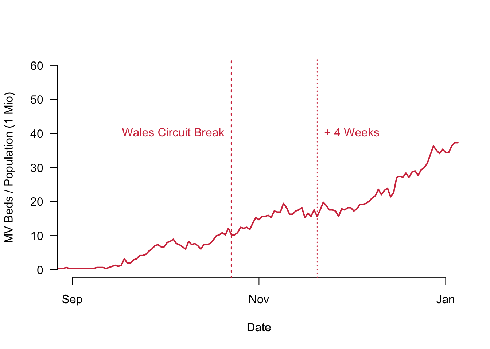
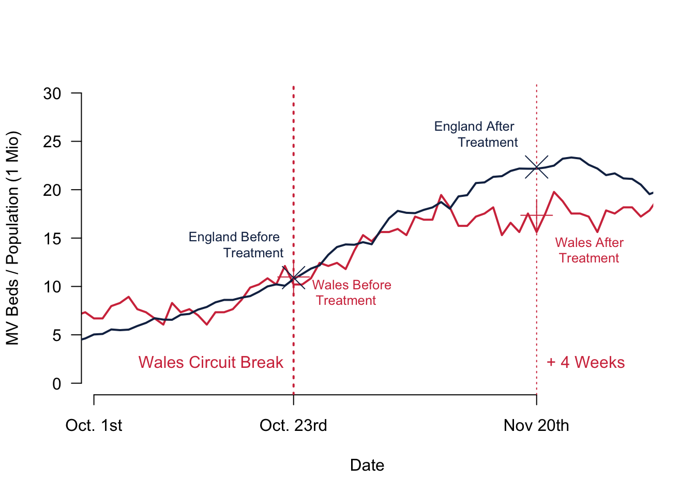

Chapter 8 The Fundamental Problem of Causal Inference
8.1 Studying Causal Effects
In the last section of this module, we will take a closer look at policy evaluations. We want to see whether a policy actually did have any effect. Was the outcome what policy makers intended? Or was it different? These questions will concern any society, since studying the effect of policies is the foundation for any good governance.
But evaluating policies comes with an important challenge. It is only possible to observe the world in two stages. Either the policy was enacted and we now see how the world developed with it. Or the policy was not enacted and we observe the world without it. What was the impact of the policy? The answer is the difference between these two worlds—the world with and the world without the policy.
For example, imagine a policy introduced mandatory environmental protection for farm land. A year later, biologists measure that harmful substances in ground water are down by 20%. Was this the effect of the policy? Or was it maybe just a particularly rainy year that washed all pollutants away? We could only tell if we observed the world in both stages: farming with the new environmental protection and farming without it.
In this last section we will learn how to think systematically about this problem. We will also take a look at some easy solutions to this problem.
To further introduce this new section, I was fortunate to interview Claire Rowlands. She is the Strategy and Policy Director for the COVID Vaccination Programme in the Welsh Government. Of course, policy evaluation plays a crucial role in fighting the pandemic: measures are updated regularly and have to be adjusted regarding their impact. A rigorous and analytical evaluation of these policies and their impact is therefore key.
8.2 Key Concepts
We have already seen that there are a couple of new concepts that we should define. Let us introduce some terms.
Treatment is the actual intervention. The causal inference framework has its roots in experimentation and in particular the life sciences, which is why we speak of the treatment here.
The Counterfactual We can observe the world as it is. We can only hypothesise about a different counterfactual world where a key condition is different.
Potential Outcomes is the outcome of the world in the presence or the absence of a treatment.
Causal Effect In this framework, we care for causality from a particular view. The causal effect is the difference between the two potential outcomes of the world.
8.3 The Fundamental Problem of Causal Inference
Let us think a bit more rigorously about the potential outcomes framework. We first need a treatment \(T\). In the light of the treatment there are two possible outcomes for our dependent variable \(Y\). In theory, we would love to observe both of them: the outcome under the treatment \(Y(1)\) and also the outcome of the same unit we are studying without the treatment \(Y(0)\). We will often collect data about more than one observation, so we index everything with \(i\) resulting in the treatment \(T_i\) and the two potential outcomes will be \(Y_i(1)\) and \(Y_i(0)\).
To calculate the causal effect of the treatment \(T_i\), we subtract the two potential outcomes from one another: \(Y_i(1) - Y_i(0)\). Done.
The problem is, we can never observe the same unit \(i\) in both conditions. As illustrated in the small table, we can only observe a unit either under the treatment condition \(T_i=1\) or the control condition \(T_i=0\), but never under both at the same time.
| ID | Outcome with Treatment | Outcome without Treatment | Treatment Variable |
|---|---|---|---|
| 1 | Y(1) | ? | T=1 |
| 2 | Y(1) | ? | T=1 |
| 3 | ? | Y(0) | T=0 |
| … | … | … | … |
| n | ? | Y(0) | T=0 |
This framework tells us already a lot about the potential research that we can implement with it: it is necessary to be able to manipulate the treatment variable \(T\). Think back at the data we collected about you. From the point of this framework, could we study the causal effect of gender on for example much you spend on average when you go out?
No, we could not because it is impossible to change gender in an experimental setting. Does that mean that this framework is unable to study any gender related questions? This is not the case: we need to think carefully about what it is that we are actually interested in—and then manipulate this condition. For example, if we are studying how the perception of gender might affect certain outcomes, we could use a clever research design that helps manipulate this gender perception.
8.4 Randomized Control Trials
So what is our way out? How can we estimate causal effects?
A very straightforward way to calculate the average treatment effect in a sample is to randomise the treatment. These randomised experiments are called Randomised Control Trials (RCT) and they are the working horse in the Life Sciences and Psychology. They have recently also found increasing attention in those disciplines who study societies at large like Economics, Sociology or Political Science.
RCTs are often considered as the gold standard, because they have a lot of internal validity: If randomization is done correctly, they reliably produce an average treatment effect. The big question is whether this validity within the study can be extrapolated to the society at large. For that, researchers need to show that a study also has external validity: the sample that is being studied actually needs to represent the population at large.
Ideally, we want to calculate the Sample Average Treatment Effect (SATE) as follows.
\[ \text{SATE} = \frac{1}{n} \sum_{i=1}^{n} \left(Y_i(1)-Y_i(0)\right) \]
However, as mentioned before, we cannot observe the individuals \(i\) under both conditions. But what we can do in an RCT is to randomise our treatment across individuals. To do so, we chose those who receive the treatment and those who are in the control group by coincidence. If this condition is satisfied, we can actually expect that the inviduals in both groups are comparable on average. Randomisation makes sure that participants in the treatment group and the control group share on average the same traits. In short, if we randomise the treatment, we can compare the results of both groups with one another. The causal effect from the treatment then simply boils down to the difference in means. We also alredy know from previous weeks how to do inference and express our uncertainty for estimates by simplyt using t-tests.
One final note here. We are observing the average treatment effect. Does that mean that the treatment will have the same effect for all individuals? No, it will not. Using randomised control trials in this way we can only estimate the average effect across all participants in a study.
8.5 Estimating a First Causal Effect
I sent out an email in Week 8 asking you for more data on the effort you are putting into this module and the effort you think you should be investing into the module. In these emails, I hid a quick experiment: I wanted to investigate whether priming you for how difficult this class is makes any difference regarding the effort you are reporting or the effort you think you should be investing.
This was the email to the control group:
Hi everybody, To fine tune the material for PL 9239, I would like to collect some more data on your study effort. Could you please fill out the two short questions at the following link until tomorrow Thursday night? Thanks a lot! Best, Christian
And here is the email to the treatment group with the extra prompt in bold so that you can easily see it here.
Hi everybody, To fine tune the material for PL 9239, I would like to collect some more data on your study effort. I am aware that the module does indeed require quite a bit of work to keep up with the comprehensive material. Could you please fill out the two short questions at the following link until tomorrow Thursday night? Thanks a lot! Best, Christian
Let us go and analyse whether this prompt actually made any difference. Note that I excluded one outlier in the control group who is putting in 50h per week and thinks that s/he should be spending 56h. (Whoever it is, feel free to get in touch if this is PL9239 causing all the work! I would love to know more.)
To analyse the data, let us first plot the data. On the left, you can see the effort that you are actually putting into your studies in both groups. In the middle, you can see what you think that you should be studying. On the right we are plotting the difference between what you think that you should be studying and what you are actually studying.


The differences are quite striking in our little experiment! Let us begin with the actual hours that you are studying. The treatment group studies on average 1.67h more. For the number of hours that you think you should be studying, the difference is also positive: Those in the treatment group think they should study on average 2.67h more. Finally, we can also calculate the difference between the hours that you think you should be studying and the actual hours that you are studying. Think of it as an expression about how ‘bad’ your conscious is. Do we find an effect here, too? We do. The difference between the treatment group and the control group is 1h—telling you that the module requires a lot of work indeed causes you a bad consciousness.
Now, what about statistical significance? Could we trust that we would find this in the larger population if we ran the experiment there? All t-test report a unanimous result: the result is not statistically significant. The reason is quite simple: your sample is way to small. Ideally we have at least 100 participants in the controlgroup and another 100 in the treatment group to get nice and small 95% confidence intervals.
##
## Welch Two Sample t-test
##
## data: dat.control$studyperweek and dat.treatment$studyperweek
## t = -0.42273, df = 4.1011, p-value = 0.6937
## alternative hypothesis: true difference in means is not equal to 0
## 95 percent confidence interval:
## -12.507561 9.174228
## sample estimates:
## mean of x mean of y
## 13.33333 15.00000##
## Welch Two Sample t-test
##
## data: dat.control$studyideal and dat.treatment$studyideal
## t = -0.44582, df = 5.2124, p-value = 0.6736
## alternative hypothesis: true difference in means is not equal to 0
## 95 percent confidence interval:
## -17.85591 12.52257
## sample estimates:
## mean of x mean of y
## 22.83333 25.50000##
## Welch Two Sample t-test
##
## data: dat.control$studydifference and dat.treatment$studydifference
## t = -0.33457, df = 7.5413, p-value = 0.7471
## alternative hypothesis: true difference in means is not equal to 0
## 95 percent confidence interval:
## -7.966007 5.966007
## sample estimates:
## mean of x mean of y
## 9.5 10.58.6 R Code
There is nothing really new this week regarding code, so let us refine your plotting skills. Today we will take a start at plotting maps. I used the stop and search data that is published online by the police. For our intro, I am using the data from December 2018 before the pandemic which you can download here.
The basic idea is pretty simple: We have to load a map of Wales from a package. Then we can plot our stop and search incidents on that map using the longitude and latitude data.
# Stop and Search Data
load("stop_and_search_18_12.RData")
# First, we want to have a map
library(rworldmap)
library(rworldxtra)
# we don't want to take a look at the whole world -
# just the bits on the map that have our data points
# so we take the min and max
min.long <- min(dat.sas$Longitude, na.rm = TRUE)
max.long <- max(dat.sas$Longitude, na.rm = TRUE)
min.lat <- min(dat.sas$Latitude, na.rm = TRUE)
max.lat <- max(dat.sas$Latitude, na.rm = TRUE)
# Get a map
newmap <- getMap(resolution = "high")
plot(newmap, xlim = c(min.long, max.long),
ylim = c(min.lat, max.lat))
# Add the incidents
points(dat.sas$Longitude, dat.sas$Latitude, col = cardiffred)
This is it—as simple as that. Go wild and explore the data that is available on the police’s website!